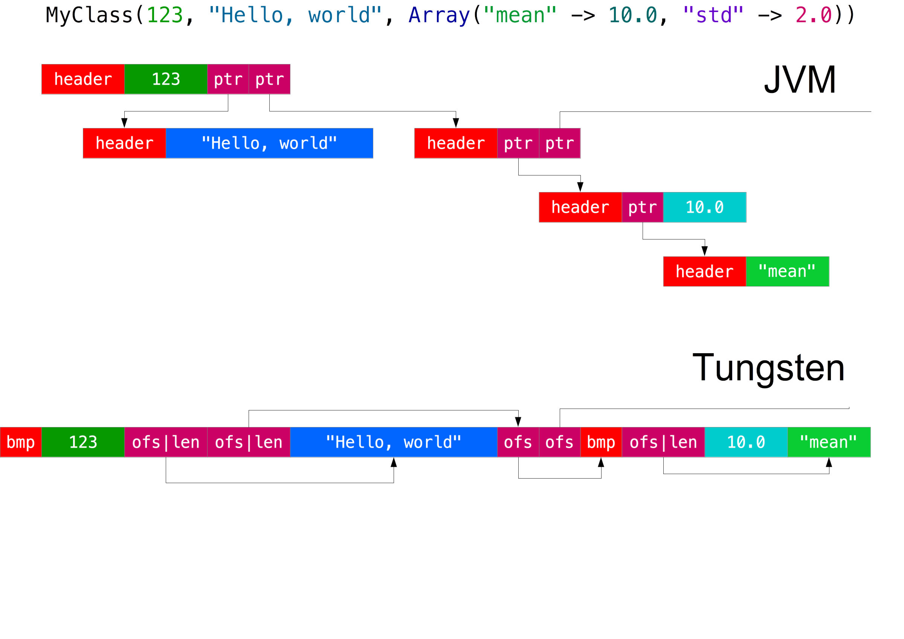

Spark 2.0
Expectations vs. Reality

Vyacheslav Baranov,
Odnoklassniki.ru
What's new in Spark 2.0?
- Datasets API
- Structured streaming
- Improvements:
- ANSI SQL Support
- SparkSession
- New Accumulator API
- Stat functions
A good release
and features are interesting
Datasets: expectations
- Type-safe operations (as in the RDD API)
- API unified with the DataFrame API
type DataFrame = Dataset[Row]
- A compact off-heap storage
- Compilation of exressions
(like in DataFrames) - Memory allocation using Unsafe
- Predicate push-down
(data filtering on the storage level)
Dataset API
// DataFrame operations
df.filter(col("country") === 12345L)
df.filter("country = 12345")
spark.sql("SELECT * FROM df WHERE country = 12345")
// Dataset operations
case class UserInfo(
id: Long,
country: Long,
...
)
val ds = df.as[UserInfo]
ds.filter(_.country == 12345L)
Datasets: Exploratory analysis
// SQL
spark.sql("SELECT country, COUNT(*) AS cnt FROM df " +
"GROUP BY country HAVING cnt >= 100500 " +
"ORDER BY cnt DESC").show(5)
// DataFrame
df.groupBy("country").agg(count("*").as("cnt"))
.filter(col("cnt") >= 100500)
.orderBy(-col("cnt"))
.show(5)
// Dataset
ds.groupByKey(_.country).agg(count("*").name("cnt"))
.filter(_._2 > 100500)
.orderBy(-col("cnt"))
.show(5)
Dataset has two fields after aggregation: col("value") & col("cnt"),
but in Scala you have to use _1 & _2.
KeyValueGroupedDataset
// Map groups
ds.groupByKey(_.country).mapGroups { (id, iter) =>
val seq = iter.toSeq.sortBy(_.createTime)
for (item <- seq) {
...
}
}
// Reduce groups
ds.groupByKey(_.country).reduceGroups { (a, b) =>
...
val t = UserInfo(.....)
t
}
One does simply write UserDefinedAggregateFunction
with a single lambda expression
Tungsten
case class UserInfo(
userId: Int,
createTime: Long,
...)
val ds = spark.read.parquet(...)
.as[UserInfo].cache()
val rdd = ds.rdd.cache()
source of data: snahackathon.org
— Tungsten has an interesting representation of data in memory.
— Tell me about it!
UnsafeRow encoding

Another example
case class Relation(
otherId: Int,
mask: Int)
case class SimpleUserRelations(
userId: Int,
relations: Seq[Relation])
source of data: snahackathon.org
wow
concern
such encoding
very tungsten
much memory
Advanced implementation
case class AdvancedUserRelations(userId: Int,
otherIds: Array[Int], masks: Array[Int]) {
require(otherIds.length == masks.length)
def relations: Iterable[Relation] = new Iterable[Relation] {
override def iterator = otherIds.indices.iterator.map { i =>
Relation(otherIds(i), masks(i))
}
override def size = otherIds.length
}
}
// Iterate over all data
ds.map(_.relations.iterator.count(r => (r.mask & (1 << 7)) != 0))
.reduce(_ + _)
rdd.map(_.relations.iterator.count(r => (r.mask & (1 << 7)) != 0))
.reduce(_ + _)
Comparison
Datasets: Reality
- API is rather good but DF are better for ad-hoc exploration
- In some cases, Tungsten encoding takes down to 3x less memory:
- Sparse (many nulls)
- Strings (UTF8 vs UTF16)
- In other cases, JVM-structures are more compact:
- Primitives
- Primitive arrays
- The size of a Shuffle is not that critical but tendency is still observable (прим. переводчика, в какую сторону?)
- Manual optimization is still much better (прим. переводчика, оптимизации в сторону скорости или использования памяти? или то и другое, на сколько я понимаю)
PySpark/SparkR compile expressions in the same bytecode as Dataest API, so the result is really good but it's far from a optimized Scala code
Datasets: Conclusion
For better efficiency
you should use the best parts of each API:
- SQL/DF for exploration
- data scheme exploration
- joins on-the-fly *(прим. переводчика: не понял, какое именно преимущество это дает, в оригинале "join данных на лету")
- statistics functions
- Dataset API for type-safe data preparation
- predicate push-down
- map data into structures using column names
- choosing a broacast join instead of a shuffle join
- RDD API for low-level optimizations
- periodical jobs *(прим. переводчика: не понял смысла, почему RDD предпочтительнее для periodical jobs)
- manual control over caching
- custom encoding for writing/reading data
Structured Streaming: Expectation
val users = spark.read.parquet("...")
val df = spark.read.parquet("...")
val res = df.joinWith(users, df("userId") === users("id"))
.filter($"city" === 12345L)
.groupBy($"age", $"gender").agg(count("*"))
// Streaming
val in = spark.readStream.format("json").load("kafka://....")
val out = df.joinWith(users, df("userId") === users("id"))
.filter($"city" === 12345L)
.groupBy($"age", $"gender").agg(count("*"))
out.writeStream.format("jdbc")
.trigger(ProcessingTime(10.seconds))
.queryName("stream1")
.start("jdbc:mysql....")
Structured Streaming: Reality
- Handy API (stateful foreach sink)
- At least once semantics
- Still microbatching
you change back-end without changing the API (2.x)
Changing nomenclature: Then | now
— recursion + negation (@palvaro) June 12, 2016
low latency | realtime
online | realtime
critical path | realtime
fast | realtime
realtime | ...
Improvements
- ANSI SQL Support
nested select and other hacks - SparkSession
instead of SparkContext, SQLContext, HiveContext, StreamingContext - New Accumulator API
instead of SparkContext, SQLContext, HiveContext, StreamingContext
class Accumulator[T](..., param: AccumulatorParam[T], ...)
abstract class AccumulatorV2[IN, OUT] {
def reset(): Unit
def add(v: IN): Unit
def merge(other: AccumulatorV2[IN, OUT]): Unit
def value: OUT
}
Improvements: stat functions
df.stat.approxQuantile("birthDate", Array(0.0, 0.1, 0.5, 0.9, 1.0), 0.01)
val sketch = df.stat.countMinSketch("birthDate", 0.0001, 0.99, 12345)
sketch.estimateCount(6248) // 98
df.filter("birthDate = 6248").count() // 98
val bf = df.stat.bloomFilter("userId", 1000000, 0.01)
bf.mightContain(51940972)
MLlib
- Development of
org.apache.spark.mllib._stops - Most models get
def evaluate()
characteristics of the model on a test dataset (прим. переводчика, возможно, есть более подходящяя фраза) - Decision trees got
featureImportances
DecisionTreeClassificationModel, RandomForestClassificationModel, GBTClassificationModel, etc. MultilayerPerceptronClassifierbesides LBFGS got SGD- Added the algorithm of clasterization
BisectingKMeans
Q&A
Latest release is 2.0.1